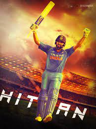
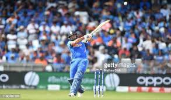
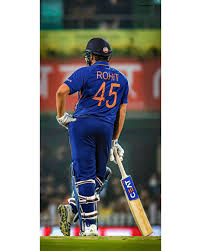

My Favourite Sport is Cricket. Cricket is a bat-and-ball game played between two teams of eleven players on a field at the center of which is a 22-yard (20-meter) pitch with a wicket at each end, each comprising two bails balanced on three stumps. The batting side scores runs by striking the ball bowled at one of the wickets with the bat and then running between the wickets, while the bowling and fielding side tries to prevent this (by preventing the ball from leaving the field, and getting the ball to either wicket) and dismiss each batter (so they are "out"). Means of dismissal include being bowled, when the ball hits the stumps and dislodges the bails, and by the fielding side either catching the ball after it is hit by the bat, but before it hits the ground, or hitting a wicket with the ball before a batter can cross the crease in front of the wicket. When ten batters have been dismissed, the innings end, and the teams swap roles. The game is adjudicated by two umpires, aided by a third umpire and match referee in International matches. They communicate with two off-field scorers who record the match's statistical information.
There are three formats in cricket.
My favorite player is Rohith Sharma and everyone call him THE HITMAN
  